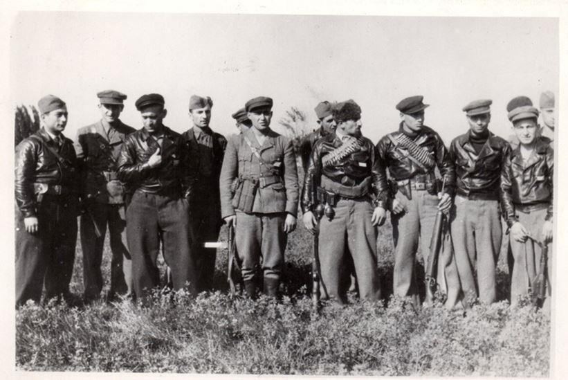
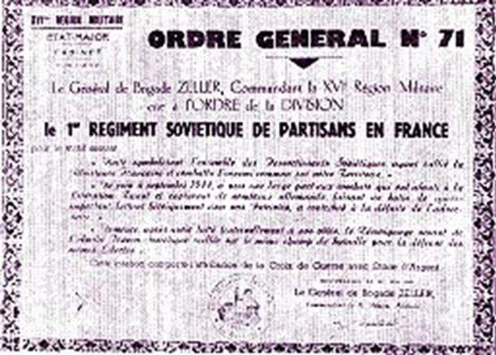
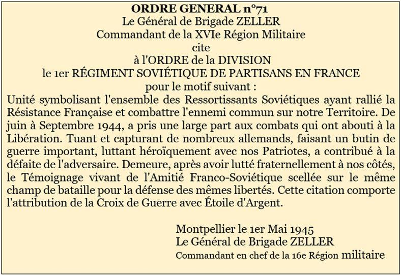
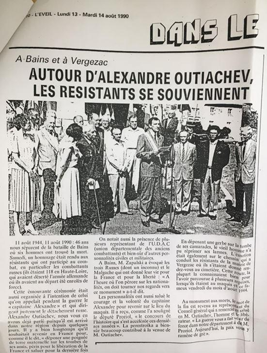
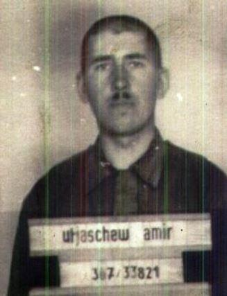
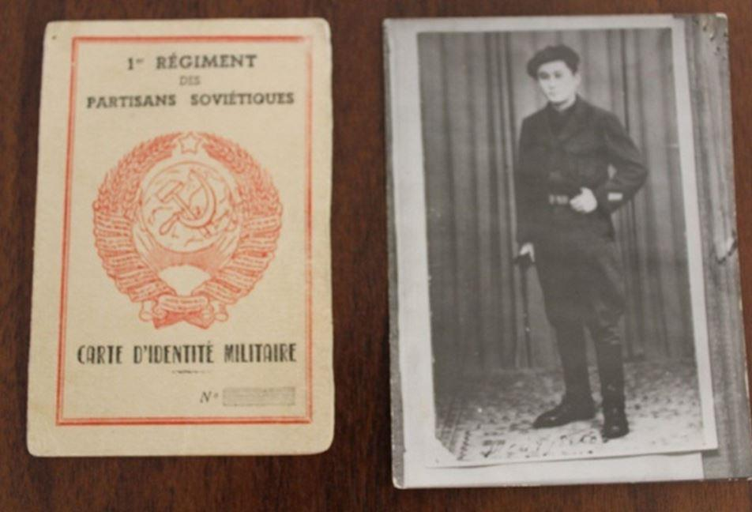
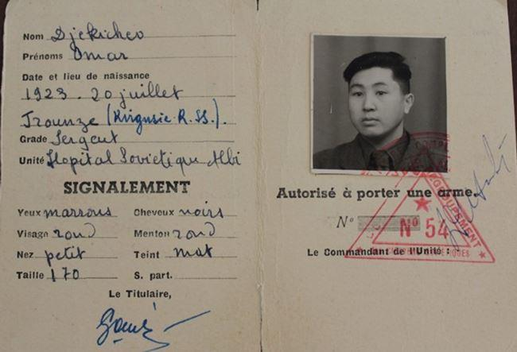
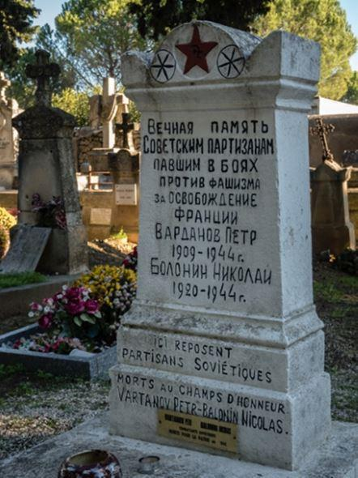

La présence de soldats russes en France, pendant la 2e guerre mondiale, est attestée ne serait-ce que par les rapports des Alliés sur le sujet. Ainsi, le « D'Day » (6 juin 1944), jour du débarquement sur les plages de Normandie, les soldats alliés s'affrontent aux bataillons « russes » appelés « Ostbataillonen », constitués par les multiples ethnies de l'URSS, occupant une partie des fortifications du « Mur de l'Atlantique ». Dans un rapport de janvier 1945, le général Eisenhower annonce qu'en Bretagne un prisonnier sur cinq est russe. Au moins 25 000 ressortissants soviétiques, recrutés par l'armée allemande, sont tenus prisonniers à Cherbourg.
Ce que l’on sait moins, c’est que d’autres ressortissants ont combattu au sein de la Résistance française. Ils ont constitué des unités de combat comme le 1er régiment soviétique de partisans, les détachements « Stalingrad » (33-35 partisans), « Tchapaïev » (36 personnes), « Kovpak » (28 personnes), « La Commune de Paris » (54 personnes), « Pour la Patrie ! » (30 personnes), « Donbass » (27 personnes), « Kotovski » (25 personnes), « La Force de Staline » (12 personnes), « La Patrie » (hommes,24 personnes), « La Patrie » (femmes, 37 personnes), « La Liberté » (37 personnes) et d’autres encore.
Ces unités se sont bien battues et ont reçu des décorations ou des distinctions françaises à titre individuel ou collectif comme le 1er régiment soviétique de partisans qui a fait l’objet de l’ordre général n°71 :
D’où venaient-ils ? Comment se sont-ils retrouvés à combattre au sein de la Résistance française ?
Les Soviétiques en France étaient répartis en deux catégories : les prisonniers de guerre et les soldats enrôlés de force, ou non, pour combattre avec l’armée allemande.
Les premiers prisonniers de guerre soviétiques sont apparus en France fin 1941. Leur arrivée fut massive en 1942 pour travailler dans les mines, dans les champs, et participer à la construction du Mur de l’Atlantique.
A la même période, des bataillons d’instruction de régions de l’Est, arméniennes, azerbaïdjanaises, tatares, turkistanaises, caucasiennes sont déployés dans le sud de la France où elles s’entraînent avant d’être redéployées sur les différents théâtres d’opération où est engagée la Wehrmacht. Recrutés prioritairement parmi les prisonniers de guerre, ils représentent une force militaire incertaine. Pour les « Volontaires » de l’Est, affamés et torturés dans les camps, le passage dans la Wehrmacht est parfois la seule possibilité de quitter leur lieu de détention et de survivre. Dès lors, il n’est guère étonnant qu’après le débarquement des Alliés, ces unités ont massivement rejoint les partisans français.
Cependant, les « Ostbataillonen » ne sont pas les seuls groupes de Soviétiques sous le commandement allemand en France. Il y a une autre unité, intégrée dans les SS. Il s’agit de la 30e division d’infanterie russe (allemand : Waffen-GrenadierDivision der SS (russische nr. 2)). Composée des trois régiments d’infanterie, d’un régiment d’artillerie, d’un groupe de reconnaissance, d’une compagnie de sapeurs, d’une compagnie de transmissions, d’un bataillon de dépôt et d’un régiment de soutien logistique, la 30e division d’infanterie russe est transférée en France le 15 août 1944 où elle rejoint le département du Doubs. Composée majoritairement d’Ukrainiens, la division est incitée à la rébellion par un officier FFI du groupement de Vesoul. Un bataillon rejoint alors le maquis de Haute-Saône avec lequel il est engagé dans le secteur de Melin, au début du mois de septembre.
Dans le Nord de la France, le recrutement des partisans soviétiques est différent. De nombreux prisonniers de guerre et de civils soviétiques y sont transférés pour travailler dans les mines où travaillent, déjà, de nombreux Polonais arrivés sur le sol français avant la guerre. La communication entre les Soviétiques et la population locale s’opère via ces ressortissants dont la langue a les mêmes racines slaves que le russe ce qui favorisera les évasions et l’intégration au sein de la Résistance locale. Tout comme les autres membres de la Résistance, ceux venus d’URSS sont chargés de missions militaires qui varient en fonction des régions et des situations. Elles comprennent des actes de sabotage de voies ferrées, de lignes téléphoniques et électriques.
Il est difficile de quantifier le nombre de soldats russes ayant combattu en France mais l’association Mémoire russe a dénombré au moins 250 sépultures de guerre où reposent environ 10.000 militaires soviétiques tués pendant la Seconde Guerre mondiale sur le sol français. Les archives du Struthof et du Stalag XII F (Ban Saint-Jean) indiquent que 24.600 soldats de l’Armée rouge y ont trouvé la mort sans qu’on puisse faire la part entre les prisonniers de guerre en provenance du Front de l’Est et ceux ayant été fait prisonnier dans le Maquis. Nous savons cependant qu’environ 150 000 prisonniers militaires et civils soviétiques sont rentrés chez eux après la guerre depuis le territoire français.
Si au début, certains combattants fuient et rejoignent la Résistance française en solitaire, une filière de transfert des fugitifs en zone libre est mise en place, et les premières formations de partisans sont créées. Comme je l’ai indiqué plus haut, les actions se limitaient à des opérations de sabotage.
En 1944, « Après les débarquements des Alliés en Normandie et en Provence, et le début du stade actif de la Résistance, il s’agissait de combats menés avec des unités régulières, des attaques contre des convois de renforts des adversaires des Alliés, ainsi que de la libération de villes et de communes 1»
Trois organismes s’occupent des prisonniers soviétiques pour les intégrer dans la Résistance : l’Union des patriotes russes, le Comité Central des Prisonniers de Guerre soviétiques et la section russe de la M.O.I (Main d’œuvre immigrée).
Le Comité Central des Prisonniers de Guerre soviétiques est sans doute l’organisation la plus importante qui s’occupe des Soviétiques à l’époque. Il veille surtout à la création des détachements de partisans, à la diffusion de la propagande à l’intérieur des camps de prisonniers de guerre, à l’édition avec l’Union des patriotes russes du journal Le Patriote soviétique et des tracts. Une des tâches les plus importantes du comité est la création des comités clandestins à l’intérieur des camps et leur intégration dans la lutte armée dès que la situation le permet. De plus le CCPGS reçoit l’appui du PCF (Parti communiste français).
Le CCPGS crée des « Comités de camp » qui ont la charge de l’organisation des groupes de combat actifs dans les camps et surtout dans les mines. Il s’agit, par exemple, de l’organisation de diversions et d’actes de sabotage de la production.
Quant au recrutement pour la Résistance française, le CCPGS ne prend pas vraiment de gants. Dans un de ses tracts, on peut lire « La Patrie Soviétique dira aux traîtres les paroles prononcées par le cosaque patriote ukrainien Taras Boulba condamnant son fils coupable de trahison : Tiens-toi immobile. C’est moi qui t’ai engendré, c’est moi qui te tuerai » … Ceux qui ne rejoindront pas la Résistance française sont prévenus…
Après leurs évasions, les prisonniers russes vont former soit des unités constituées, soit servir dans les rangs des FFI en fonction des circonstances.
Dès le début 1944, le nombre d’évasions des camps est telle que le CCPGS augmente la création des détachements soviétiques dépendant des FFI. Le nombre est en moyenne une trentaine de combattants dans un détachement. Le travail du Comité central sur l’organisation des prisonniers de guerre soviétiques est mené primordialement dans le nord et dans l’est de la France, des lieux où se trouve la plus grande concentration des camps de prisonniers soviétiques. Le plus grand nombre des détachements soviétiques se trouvent dans l’Est de la France. Les détachements de partisans soviétiques opérant au printemps-été 1944 à proximité des villes de Nancy, Saint-Mihiel, Bar-le Duc, Verdun, Gray… se trouvent sous le commandement de l’Etat-major politico-militaire des partisans soviétiques à Nancy. Avec les F.F.I., les partisans soviétiques participent à la libération des villes françaises du nord et de l’est de la France en 1944 ainsi qu’à des combats contre les Allemands et aux actes de diversion des chemins de fer et de sabotage des lignes téléphoniques et télégraphiques.
Dans la partie sud de la France, l’apport soviétique sera surtout le fait des Arméniens. En effet, La légion des Arméniens enrôlés de force dans la Wehrmacht se trouve à Mende, en Lozère. Les FFI, réussissent à prendre contact avec un des officiers de la Légion arménienne, le commandant Alexandre Kazarian. Celui-ci se voit chargé d’organiser un comité secret au sein de la légion afin de préparer un coup de force et une évasion des légionnaires arméniens à la faveur d’une attaque simulée par une compagnie F.T.P. En juillet 1944 plus de 400 hommes constituent le 1er régiment soviétique arménien sous le commandement de Kazarian.
En Dordogne et dans le Tarn, ce sont les Géorgiens qui viendront appuyer les FFI pour la libération des villes de ces départements. En Haute-Loire, les Tatares, sous le commandement d’ Amir (Alexandre) Outiachev (Croix de Guerre 1939-1940), participent à la libération des villes du département.
En août 1944, les Soviétiques, fraîchement sortis de la prison de Fresne, libèrent l’Ambassade d’Union soviétique à Paris…
La Résistance en France a mobilisé non seulement les Français, mais aussi des milliers d'étrangers qui se trouvaient dans ce pays durant l’Occupation. Parmi eux, les émigrés russes résidant en France depuis longtemps ainsi que les citoyens soviétiques amenés en France par les Allemands, soit pour des travaux forcés, soit au sein de la Wehrmacht. Deux groupes assez différents politiquement et idéologiquement qui sont entrés dans la Résistance, soit en tant que patriotes russes, soit comme des patriotes français.
Les émigrés russes qui participent activement à la lutte antinazie au sein des réseaux résistants sont cependant peu nombreux, faute d’une institution unique attachée à la coordination de l’effort de résistance mais, également, parce qu’un grand nombre d’émigrés russes ne sont pas plus favorables à l’idéologie soviétique qu’à l’idéologie hitlérienne. Les émigrés qui participent à la Résistance, souvent jeunes, vivent en France depuis l’enfance et la considèrent comme une seconde patrie. Sous l’occupation, ils entrent naturellement en résistance pour défendre leur patrie d’accueil ou rejoignent, des réseaux de résistance spécifiquement russes qui se développent à partir de 1943.
Il faut, également, rappeler, que ceux qui avaient l’âge étaient entrés en guerre au sein de l’armée française comme le Prince Amilakvari ou encore Romain Gary.
Contrairement à la résistance des émigrés russes, la résistance soviétique est fortement encadrée. Incorporés dans les F.F.I., les Soviétiques participent à la Résistance dans toute la France. Ils combattent, comme je l’ai évoqué plus haut, au sein des F.F.I. dans le Nord et l’Est de la France.
Omor Djekiev, soldat de l’Armée rouge, fut l’un d’eux. Fait prisonnier quelque part sur le Front de l’Est, il réussit à s’évader avec un Français et rejoint le Sud-Ouest de la France (dans la région d’Albi). Ne parlant pas français, il rejoint le maquis, tant pour continuer le combat que pour survivre en France occupée…
Rentré au pays, il sera, comme la majorité de ses compagnons, emprisonnés. En URSS d’après-guerre, il est mal considéré d’avoir combattu dans un pays étranger, sous un autre drapeau, ajouté au fait que le statut de prisonnier de guerre est une honte totale… Le sergent Omor Djekiev mourra au Goulag deux ans après son retour au pays. Il avait 24 ans.
Parmi les émigrés russes, on se doit d’évoquer Anna Betoulinskaïa dont une des mélodies qu’elle a créées devint l’hymne de la Résistance : le Chant des partisans…
Anna Marly (nom qu’elle pris pour danser dans les Ballets russes) a non seulement composé la musique mais en a aussi écrit les paroles russes. Paroles qui ont inspiré Maurice Druon et Joseph Kessel.
P.T-H.
NOTE
1. Sergueï Dybov, président de l’association Mémoire Russe
Portrait du bandeau de titre Vassili Porik. Lire sur cet officier l’article de Daria Gridiaïeva : « Comment un officier soviétique a transformé un camp de prisonniers en nid de résistants en France ».
Partager cette page